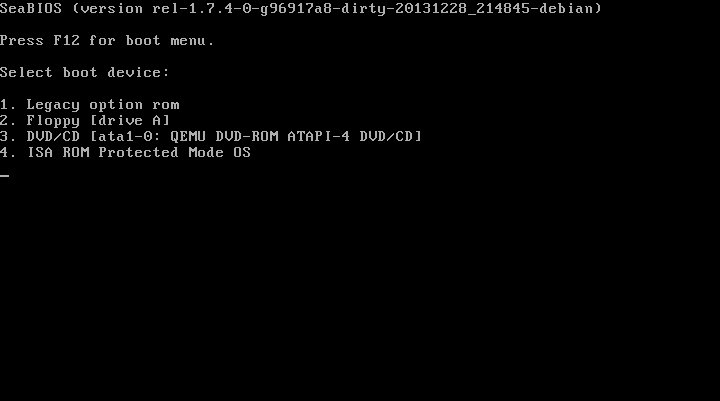

<!doctype html>
<html lang="en">

  <head>
    <meta charset="utf-8">

    <title>Coreboot POuL Workshop</title>

    <meta name="description" content="Coreboot POuL Workshop">
    <meta name="author" content="Nicola Corna">

    <meta name="apple-mobile-web-app-capable" content="yes" />
    <meta name="apple-mobile-web-app-status-bar-style" content="black-translucent" />

    <meta name="viewport" content="width=device-width, initial-scale=1.0, maximum-scale=1.0, user-scalable=no, minimal-ui">

    <link rel="stylesheet" href="reveal.js/css/reveal.css">
    <link rel="stylesheet" href="reveal.js/css/theme/night_coreboot.css" id="theme">
    <link href='https://fonts.googleapis.com/css?family=Montserrat' rel='stylesheet' type='text/css'>

    <!-- Printing and PDF exports -->
    <script>
      var link = document.createElement( 'link' );
      link.rel = 'stylesheet';
      link.type = 'text/css';
      link.href = window.location.search.match( /print-pdf/gi ) ? 'reveal.js/css/print/pdf.css' : 'reveal.js/css/print/paper.css';
      document.getElementsByTagName( 'head' )[0].appendChild( link );
    </script>

    <!--[if lt IE 9]>
    <script src="reveal.js/lib/js/html5shiv.js"></script>
    <![endif]-->

    <!-- For syntax highlighting -->
	<link rel="stylesheet" href="reveal.js/highlight.js/src/styles/solarized-light.css" id="highlight-theme">
  </head>

  <style type="text/css">
  .reveal pre code {
    color: #3f3f3f;
    background: #eee none repeat scroll 0% 0%;
    font-size: 0.7em;
    line-height: 1.3em;
    border-radius: .2em;
  }
  </style>

  <body>
    <div class="reveal">
      <section data-state="orange">
      <!-- Any section element inside of this container is displayed as a slide -->
      <div class="slides">
        <!-- Slides are separated by newline + three dashes + newline, vertical slides identical but two dashes -->
			<section data-markdown data-separator="^\n---\n$"
			         data-separator-vertical="^\n--\n$">
				<script type="text/template">


13 Dicembre 2016<br>
Politecnico Open unix Labs

---

<div style="float:left; width:50%">


<h3><b>Nicola Corna</b></h3>
<h4> [**nicola@corna.info**](mailto:nicola@corna.info) </h4>
<h4> [**github.com/corna**](https://github.com/corna)</h4>
</div>


<div style="float:right; width:50%">


<h3><b>Federico Izzo</b></h3>
<h4> [**federico.izzo42@gmail.com**](mailto:federico.izzo42@gmail.com) </h4>
<h4> [**github.com/Nimayer**](https://github.com/Nimayer)</h4>
</div>

---

# Indice

 * <a href="#/5">**Coreboot**</a>
  - <a href="#/6">**Cos'è?**</a>
  - <a href="#/7">**Come si installa?**</a>
 * <a href="#/8">**Intel ME**</a>

---

# Coreboot: cos'è?

--

Coreboot è un progetto volto a sostituire il firmware presente nella maggior
parte dei computer.

Potremmo dire che Coreboot è un'implementazione di un BIOS libero, ma non
sarebbe completamente vero.

--

## Perchè Coreboot non è propriamente un BIOS

 * Un BIOS inizializza l'hardware e fornisce delle chiamate al sistema in esecuzione<!-- .element: class="fragment" -->
 * Coreboot inizializza solamente l'hardware<!-- .element: class="fragment" -->
  - Coreboot + SeaBIOS è un BIOS completo<!-- .element: class="fragment" -->

--

## Vantaggi

 * FOSS software<!-- .element: class="fragment" -->
  - Sicuro<!-- .element: class="fragment" -->
  - "Hackable"<!-- .element: class="fragment" -->
  - Libero da backdoor nel BIOS<!-- .element: class="fragment" -->
 * Molto veloce (0.5/1 s per iniziare a caricare il kernel Linux)<!-- .element: class="fragment" -->
 * Scritto quasi completamente in C<!-- .element: class="fragment" -->
 * Sviluppato <!-- .element: class="fragment" -->secondo la filosofia "_facciamo il minimo indispensabile, poi togliamoci dai piedi_"

--

## Svantaggi

 * Supportato su pochi computer<!-- .element: class="fragment" -->
 * Difficile da compilare<!-- .element: class="fragment" -->
 * Difficile da installare<!-- .element: class="fragment" -->
 * Sviluppo e installazione sempre più difficile con le nuove generazioni di processori<!-- .element: class="fragment" -->
  - Intel Boot Guard<!-- .element: class="fragment" -->

--

## Funzionamento

Coreboot è suddiviso in quattro fasi principali: (TODO)

 * Bootblock
 * Romstage
 * Ramstage
 * Payload

--

## Bootblock

In questa primissima fase Coreboot:
 * Legge il contenuto della CMOS<!-- .element: class="fragment" -->
 * Decide quale modalità eseguire successivamente<!-- .element: class="fragment" --> (_Normal_ o _Fallback_)
 
--

## Romstage

Questa è la fase più critica, in cui Coreboot inizializza la RAM e Intel ME.
 * Inizializza le periferiche per il debugging<!-- .element: class="fragment" -->
 * Legge le proprietà del chipset<!-- .element: class="fragment" -->
 * Legge le configurazioni delle RAM dall'SPD o dall'XMP<!-- .element: class="fragment" -->
 * Decide la configurazione migliore e la applica<!-- .element: class="fragment" -->
 * Controlla se la RAM funziona<!-- .element: class="fragment" -->
 * Alloca la memoria richiesta da Intel ME<!-- .element: class="fragment" -->

--

## Ramstage

In questa fase coreboot inizializza il resto delle periferiche ed esegue il
codice del payload.
Coreboot ha terminato il suo scopo ed esce di scena: fino allo
spegnimento/sospensione non sarà più eseguito codice di Coreboot.

--

## Payload

L'hardware è ora inizializzato ed è giunto il momento che un altro software
continui con l'avvio del computer.
I payload più interessanti sono:
 * SeaBIOS<!-- .element: class="fragment" -->
 * Tianocore (UEFI)<!-- .element: class="fragment" -->
 * GRUB<!-- .element: class="fragment" -->
 * Linux<!-- .element: class="fragment" -->

--

Ci sono poi anche dei payload "secondari":
 * nvramcui<!-- .element: class="fragment" -->
 * coreinfo<!-- .element: class="fragment" -->
 * Memtest86+<!-- .element: class="fragment" -->
 * Tint (Tint is not tetris)<!-- .element: class="fragment" -->

---

## SeaBIOS



--

Un classico BIOS x86.

Coreboot + SeaBIOS è la soluzione standard, che permette di avere un BIOS
"standard".

---

## Tianocore


--

Tianocore è la reference implementation di UEFI di Intel, rilasciata sotto
licenze open.

Duet è uno dei progetti di Tianocore, che permette di avere UEFI con coreboot
(se riuscite a farlo funzionare, io non ci riesco).

Tianocore può anche includere SeaBIOS come CSM, in modo da avere un sistema
UEFI + BIOS.

---

## GRUB

(immagine)

--

GRUB non ha bisogno di presentazione, sapete già cos'è.

La cosa che non sapete è che GRUB può essere direttamente lanciato da Coreboot
senza un BIOS. Questo grazie al fatto che Linux non usa le chiamate BIOS

---

# Coreboot: come si installa?

--

TODO

---

# Intel ME

--

TODO

---

# Thank you!


These slides are licensed under Creative Commons<br>
Attribution-ShareAlike 3.0 Unported

### [www.poul.org](https://www.poul.org)

          </script>
        </section>
      </div>
      </section>

    </div>

    <script src="reveal.js/lib/js/head.min.js"></script>
    <script src="reveal.js/js/reveal.js"></script>

    <script>

    // Full list of configuration options available at:
    // https://github.com/hakimel/reveal.js#configuration
    Reveal.initialize({
      controls: true,
      progress: true,
      history: true,
      center: true,

      transition: 'slide', // none/fade/slide/convex/concave/zoom

      // Optional reveal.js plugins
      dependencies: [
        { src: 'reveal.js/lib/js/classList.js', condition: function() { return !document.body.classList; } },
        { src: 'reveal.js/plugin/markdown/marked.js', condition: function() { return !!document.querySelector( '[data-markdown]' ); } },
        { src: 'reveal.js/plugin/markdown/markdown.js', condition: function() { return !!document.querySelector( '[data-markdown]' ); } },
        { src: 'reveal.js/plugin/highlight/highlight.js', async: true, callback: function() { hljs.initHighlightingOnLoad(); } },
        { src: 'reveal.js/plugin/zoom-js/zoom.js', async: true },
        { src: 'reveal.js/plugin/notes/notes.js', async: true }
      ]
    });

  </script>

  </body>
</html>
